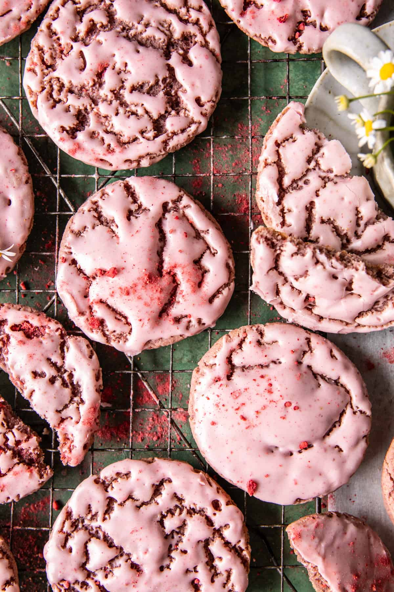

Double Strawberry Sugar Cookies

Description
Sweet, simple, and delicious, Double Strawberry Sugar Cookies. Soft and
chewy strawberry cookies with both strawberry jam and dried strawberries
for double the strawberry flavor. Each light pink berry-filled cookie is
lightly iced with a cream cheese strawberry icing. These cookies do not
disappoint. Each sweet bite is perfectly chewy, layered with fresh
berries, and topped with a deliciously creamy icing - so good!
Ingredients
- 3 cups freeze dried strawberries
- 2 sticks (1) cup salted butter, at room temperature
- 1 cup granulated sugar
- 1 egg
- 2 teaspoons vanilla extract
- 2 cups all-purpose flour
- 1 teaspoon baking soda
- 1/2 teaspoon kosher salt
- 1/3 cup high quality-strawberry jam
ICING
- 2 ounces cream cheese
- 2 cups powdered sugar
- 1/4 cup hot milk
- 1 teaspoon vanilla extract
Steps
- In a blender or food processor, process the freeze-dried strawberries into a fine powder.
- Preheat the oven to 350° F. Line a baking sheet with parchment paper.
- In a large bowl, beat together the butter, granulated sugar, and vanilla until combined. Beat in the egg. Add the flour, baking soda, 1/4 cup strawberry powder (save the remainder for the frosting), and salt. Beat in the strawberry jam.
- Roll the dough into rounded tablespoon size balls and place 2 inches apart on the prepared baking sheet. Bake 8 minutes. Remove from the oven, rotate, and tap the baking sheet on the counter 1 time to flatten. Bake another 2-3 minutes or until the cookies are just beginning to set on the edges. Remove from the oven and let the cookies cool on the baking sheet. They will continue to cook slightly as they sit on the baking sheet.
- To make the icing, mix all ingredients in a bowl with 3-4 tablespoons strawberry powder. Add additional milk to thin, as needed.
- If desired, dip each cookie in the icing. Let set or enjoy! These are wonderful - iced or not! Store in an airtight container for up to 5 days.